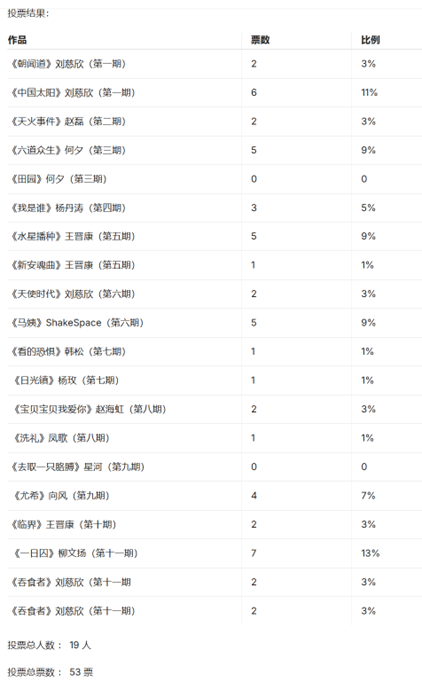
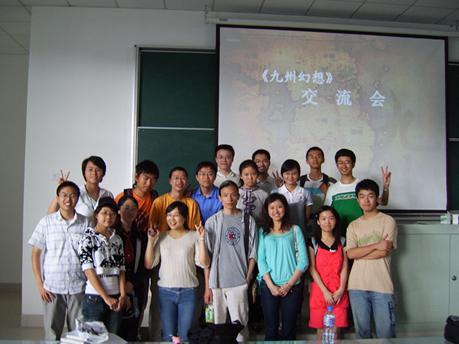

交大幻协活动掠影2002-2024
2002.9.26
和上学期招新时一样，正碰上小雨。
两张桌子，一块黑板，还有十来个干事在忙碌。
……交大的科幻迷果然是很多啊！
宣传的方式，好像是利诱为主：）
黑板上挂着几本科幻世界，然后拉住人就说“现在入会，免费赠送杂志啦”。
印制的那张宣传单还不错，制作得挺精美。
宣传词是：
历史与未来 文明与毁灭 浪漫与理智 梦境与现实
——Swordsp (网络流·停止冬眠) 饮水思源BBS SciFic版
2002.11.16
沉寂了许久，我们的协会在期中考试过后又重新开始活跃了。
首先是协会的主页展示，历经两次改版……地址是www.51kh.com，大家有空多去看看吧。
后面的科幻主题讨论，居然叫做“阅读理解”！……选的文章是阿西莫夫的短篇《眼睛不仅用来看东西》后面列举了数个讨论的主题，有选择题、问答题、论述题。虽说足够出人意料，不过总觉得太正规了些，每道“题目”还标注了分数，汗……
接下来是科幻作品有奖竞猜活动。现场科幻迷的记性还真不错，每一篇都有好几人答出，连一些细节都能记得那么清楚。
美中不足的是，奖品实在不够科幻，居然是——绒毛玩具！如果是ET模型还差不多……
——Swordsp (网络流·停止冬眠) 饮水思源BBS SciFic版
【投票：2002年银河奖花落谁家】

——饮水思源 BBS SciFic版
2007.5.31
奇幻交流活动，与华师大。
嘉宾：大角（潘海天）

——windynes (ＳＳ跑轮跑的欢) 饮水思源BBS SciFic版
2007.6.6
科幻辩论赛
——dfttt (不求甚解) 饮水思源 BBS SciFic 版

2008.5.24
2008.5.26
神秘小屋（鬼屋）
——christfake (赝品上帝) 饮水思源BBS SciFic 版
这是一场源自激情的华章——谁说当代缺乏创意，我们用精致用心策划作为反驳；谁说如今丧失活力，我们用齐心协力克服困难反对；谁说现实没有奇迹，不，现实有奇迹，我们用平地而起的废品小屋证明。
2008.10.23
科幻粘土成果展
——demonyang (恶魔之羊) 饮水思源 BBS SciFic 版
去的人不多，但是还是很好玩滴~
晚上有小盆友说，希望以后还要搞这样的活动，感动一记~

2008.12.11
科幻周之幻迷聚会——荒野黎明
2009.3.26
——饮水思源BBS dfttt (不求甚解)
2009.3.29
制作社团刊物 TRANS
上海交大科幻协会开展TRANS活动已有2年，活动旨在翻译一些国外的科幻、奇幻作品，以短中篇为主。希望对科幻有爱并能持之以恒的朋友加入到我们的活动中来。
我们去年将上期翻译的作品集结成册，将售出的收入都献给了灾区同胞，其余供内部传阅。我们希望今年也能组成一本翻译文集。
2010 3.23-25
《科幻世界》倒社风波前后
andrewsun (inHK)：
那么就科幻世界这件事，我们作为一个读者可以做点什么呢？
我们可以从现在开始拒绝购买质量粗劣的科幻世界，并号召自己身边尚不知情的科幻迷们也参与到拒绝购买的行列中来。 我们可以参与民间的一些网络签名活动，表明自己的态度。 我们可以给四川科协打去投诉电话，大声说我们对他们的行为非常不满。 我们可以写信给科幻世界编辑社，告诉他们我们一直以来都很支持这份杂志，并反对把它搞成一份不伦不类的三流商业刊物。
这都是我们可以做的，并不困难。这样才能改变中国。
dfttt (不求甚解)：
虽然有些事情，我们还无力改变。但至少，我们能够给那些在艰难的环境中，仍坚持着理想的编辑们一些鼓舞、一些温暖。谢谢他们，曾经给我们带来那么多美妙的文章，提醒他们，还有许许多多的读者在默默支持。
3月25日（本周四）中午，科幻协会在东区大转盘等着大家，让我们签下自己的名字，尽自己绵薄之力帮助科幻世界众编辑们，相信他们能走下去的！
PS：我们的横幅会寄给编辑部，而不是四川科协，所以恳请大家尽量不要使用攻击性的语言，而是多些对那些可敬的人们的鼓舞。
dxx (独行侠)：
也有很多人留下了很多话，很高兴看到科幻世界的粉丝们都过来留下对她的祝福
总之谢谢大家了，我们马上会把签满字的横幅送过去的
希望能最大限度地鼓励编辑们吧
这一关冲过去，相信会有更好的明天~
2011.9.14

2011.9.18
集体通宵制作国内首面三体墙，本来计划加上标语"推翻人类暴政,世界属于三体"，但制作过程被两名校警严密监控，甚至招来了警车，非常紧张地询问"三体"是什么意思，口号自然无法见光。
2012.9.25
科幻协会招新摊位

2013.10.31
学人书店·阿西莫夫专题沙龙
2013.11.15
交大幻协新书，参照MIT书单
2014.5.25
上海苹果核幻想节交大场
嘉宾：宝树、飞氘
2015.11.4
协会藏书
2015.10.28
张冉读书会：张冉 "能归于科幻的，都是极度理性又富预言感的作品"
2016.3.9
科幻中的历史——真实记叙的过往，以及，更多的可能性
2017.3.27
佘山天文台观星
2018.3.10
观影与破冰
2018.4.8
激光切割的幻协徽章
2018.7.15
第二课堂TRPG知识科普与玩耍

2019.11.30
在蔚芝书店打桌游

2020.2.1
空想读书会——线上版
内容包括：
穿越时空抗击邪神拯救妹妹的科幻史诗
《非对称性时光机》
以及
拥有硬核书名与神奇内容的菜谱
《血与花》
2021.8.1
魔都高校幻协科幻接龙
故事背景：
赛博时代，人类大量使用机械义体，意识上传成为可能。人类建立了电子冥府，将死去人的意识放入电子空间使其永生，因而形成了阴阳两界、黑白无常和十殿阎罗。
2022.1.2
魔都高校社长见面与杂谈
2023.9.23-24
交大幻协成员参与“另一颗星球“科幻大会

2024.3.31
讲座：太空歌剧：从《沙丘》到《星球大战》
嘉宾：南方战士